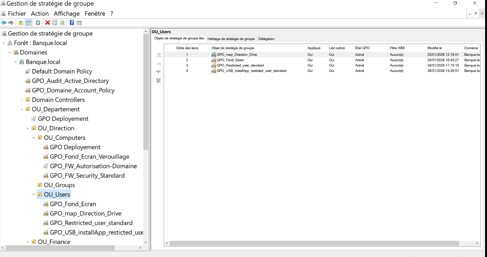
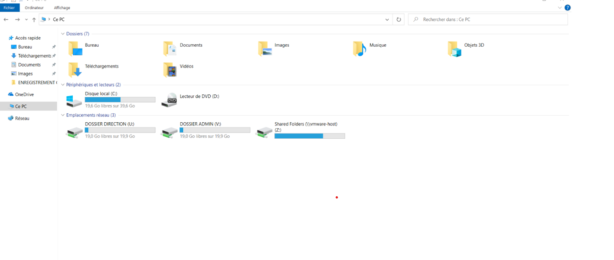

00 — CONTEXTE
Dans le cadre d'un projet personnel, j'ai initié la mise en place d'un environnement Active Directory pour comprendre son rôle dans la gestion et la sécurisation des systèmes en entreprise. Ce premier lab m'a permis de poser les bases de l'administration Windows centralisée.
01 — ARCHITECTURE
Contrôleur de domaine
Windows Server — BANQUE.local
Poste client 01
Windows 10 Pro
Poste client 02
Windows 11 Pro
Pas de segmentation réseau — focus sur les fondamentaux AD
02 — GALERIE
Cliquez sur une vignette pour ouvrir la galerie complète.

Structure AD
DC + 2 postes clients intégrés au domaine.

GPO de sécurité
Politiques de mot de passe et restrictions système.

Serveur de fichiers
Partage réseau, droits NTFS et lecteurs auto.
03 — IMPLÉMENTATIONS
Active Directory
Déploiement & gestion des identités
GPO de sécurité
Stratégies de groupe appliquées
Serveur de fichiers
Partage réseau centralisé
04 — LIMITES & ÉVOLUTION
Ces limites m'ont conduit à concevoir un lab plus avancé, intégrant :